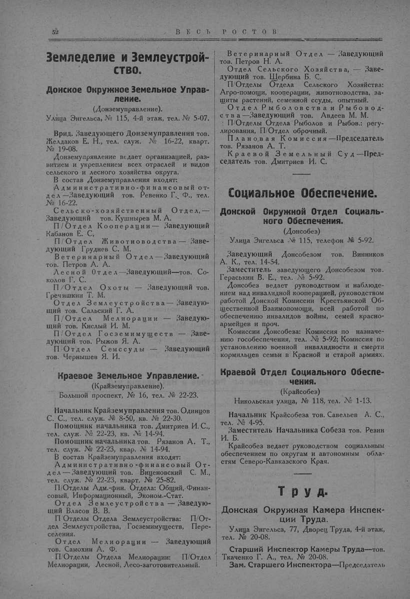

Лист источника 102
Скан

Распознанный текст
52 В Е С Т Ь Р О С Т О В
Земледелие и Землеустрой-
ство.
Донское Окружное Земельное Управ-
ление.
(Донземуправление).
Улица Энгельса, № 115, 4-й этаж, тел. № 5-07.
Врид. Заведующего Донземуправления тов.
Желдаков Е. Н., тел. служ. № 16-22, кварт.
№ 19-08.
Донземуправление ведает организацией, раз-
витием и укреплением всех отраслей и видов
сельского и лесного хозяйства округа.
В состав Донземуправления входят:
Административно-финансовый от-
дел—Заведующий тов. Ревенко Г. Ф., тел.
№ 16-22.
Сельско-хозяйственный Отдел,—
Заведующий тов. Кушнырев М. А.
П/Отдел Кооперации— Заведующий
Кабанов Е. С.
П/Отдел Животноводства — Заве-
дующий Груднев С. М.
Ветеринарный Отдел — Заведующий
тов. Петров А. А.
Лесной Отдел—Заведующий—тов. Со-
колов Г. С.
П/Отдел Охоты — Заведующий тов.
Гречишкин Т. М.
Отдел Землеустройства — Заведую-
щий тов. Сальский Г. А.
П/Отдел Мелиорации — Заведую-
щий тов. Кислый И. М.
П/Отдел Госземимуществ — Заве-
дующий тов. Рыжов Я. А.
П/Отдел Семссуды — Заведующий
тов. Чернышев Я. И.
Краевое Земельное Управление.
(Крайземуправление).
Большой проспект, № 16, тел. № 22-23.
Начальник Крайземуправления тов. Одинцов
С. С., тел. служ. № 8-50, кв. № 22-30.
Помощник начальника тов. Дмитриев И. С.,
тел. служ. № 22-23, кв. № 14-94.
Помощник начальника тов. Рязанов А. Т.,
тел. служ. № 22-23, квар. № 14-94.
В состав Крайземуправления входят:
Административно-финансовый От-
дел—Заведующий тов. Виценовский С. М.,
тел. служ. № 22-23, кварт. № 25-82.
П/Отделы Адм.-фин. Отдела: Общий, Финан-
совый, Информационный, Эконом.-Стат.
Отдел Землеустройства — Заведую-
щий Власов В. В.
П/Отделы Отдела Землеустройства: П/От-
дел Землеустройства, Госземимуществ, Пере-
селения.
Отдел Мелиорации — Заведующий
тов. Самохин А. Ф.
П/Отделы Отдела Мелиорации: П/Отдел
Мелиорации, Лесной, Лесо-заготовительный.
Ветеринарный Отдел — Заведующий
тов. Петров Н. А.
Отдел Сельского Хозяйства, — Заве-
дующий тов. Щербина Б. С.
П/Отделы Отдела Сельского Хозяйства:
Агро-помощи, кооперации, животноводства, за-
щиты растений, семенной ссуды, опытный.
Отдел Рыболовства и Рыбовод-
ства—Заведующий тов. Авдеев М. М.
П/Отделы Отдела Рыболов и Рыбов.: регу-
лирования, П/Отдел оброчный.
Плановая Комиссия—Председатель
тов. Рязанов А. Т.
Краевой Земельный Суд—Пред-
седатель тов. Дмитриев И. С.
Социальное Обеспечение.
Донской Окружной Отдел Социаль-
ного Обеспечения.
(Донсобез)
Улица Энгельса № 115, телефон № 5-92.
Заведующий Донсобезом тов. Винников
А. К., тел. 14-54.
Заместитель заведующего Донсобезом тов.
Гераськин В. Е., тел. № 5-92.
Донсобез ведает руководством и наблюде-
нием над инвалидной кооперацией, руководством
работой Донской Комиссии Крестьянской Об-
щественной Взаимопомощи, всей работой по
обеспечению инвалидов войны, семей красно-
армейцев и проч.
Комиссии Донсобеза: Комиссия по назначе-
нию гособеспечения, тел. № 5-92; Комиссия по
установлению военной инвалидности и смерти
кормильцев семьи в Красной и старой армиях.
Краевой Отдел Социального Обеспе-
чения.
(Крайсобез)
Никольская улица, № 118, тел. № 1-13.
Начальник Крайсобеза тов. Савельев А. С.,
тел. № 4-95.
Заместитель Начальника Собеза тов. Резин
И. Б.
Крайсобез ведает руководством социальным
обеспечением по округам и автономным обла-
стям Северо-Кавказского Края.
Т р у д.
Донская Окружная Камера Инспек-
ции Труда.
Улица Энгельса, 77, Дворец Труда, 4-й этаж,
тел. № 20-08.
Старший Инспектор Камеры Труда—тов.
Ткаченко Г. А., тел. № 20-08.
Зам. Старшего Инспектора—Председатель